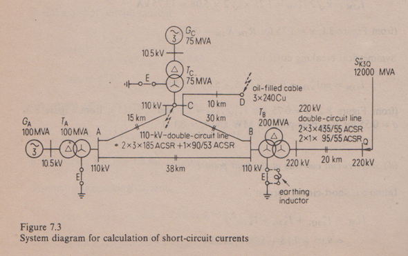

avamaity
avamaity Roeper Example
Here is an example from the book Short-circuit Currents in Three-phase Systems by Richard Roeper. I was surprised to find that my calculations using the admittance matrix method rendered with python did not tally with some of the results given in the book.
The example is the one towards the end of the book titled Example 3: Initial A.C. Short-circuit Currents I"k for the Five Kinds of Short Circuit in a Meshed System with Several Infeeds. What stumped me was that the three pole short impedance tallied to two decimal places yet the zero sequence impedance was close but not equal.
Since nothing would make sense without a circuit diagram, here is the interconnected system depicted in the book.
The fault point is at D. After detailing the equipment ratings and mesh connections, the book goes on to give a step by step account of the circuit reduction procedure. The impedance values for the positive-, negative-, and zero-sequence systems given in book are:
Z1D = Z2D = (1.776 + j9.232)Ω = 9.401Ω(φ=79.1o)
Z0D = (6.406 + j10.978)Ω = 12.710Ω(φ=69.73o)
Note that the cartesian and polar representations do not tally.
Here is a small script that calculates the above impedances using the admittance matrix method. The script starts of with the impedance calculations of each branch attached to a bus.
import numpy as np
#Constants
a = np.exp(2*np.pi/3.)
A = np.matrix( ((1., 1., 1.), (1., a**2., a), (1., a, a**2.)), dtype=np.complex64)
#System description at Bus A
S_NG1 = 100. #generator rated apparent power in MVA
U_NG1 = 10.5 #generator rated voltage in kV
xst_dG1 = 10.5 #relative initial subtransient reactance in percent
r_G1 = 0.3 #generator resistance in percent
S_NT1 = 100. # transformer rated capacity in MVA
U_NT1LV = 10.5 #in kV
U_NT1HV = 115. #in kV
u_kNT1 = 11.5 #in percent
u_RNT1 = 0.5 #in percent
n_ZT1 = 0.8 #ratio of zero to positive sequence impedance
#Sequence impedance calculations -----------------------
Z1_G1 = complex(r_G1, xst_dG1)*(1./100.)*((U_NG1**2)/S_NG1)*(U_NT1HV/U_NT1LV)**2
print 'Z1_G1 =', Z1_G1
Z2_G1 = Z1_G1
Z1_T1 = complex(u_RNT1/100., u_kNT1/100.)*((U_NT1HV**2)/S_NT1)
print 'Z1_T1 =', Z1_T1
Z2_T1 = Z1_T1
Z0_T1 = n_ZT1*Z1_T1
print 'Z0_T1 =', Z0_T1
Similarly the impedance calculations for devices (other than lines) connected to buses B, C and Q are as follows:
#System description at Bus B
S_NT2 = 200. # transformer rated capacity in MVA
U_NT2LV = 115. #transformer LV side nominal voltage in kV
U_NT2HV = 230. #in kV
u_kNT2 = 12. #in percent
u_RNT2 = 0.3 #in percent
n_ZT2 = 2.4 #ratio of zero to positive sequence impedance
#Sequence impedance calculations ------------------
Z1_T2 = complex(u_RNT2/100., u_kNT2/100.)*((U_NT2LV**2)/S_NT2)
print 'Z1_T2 =', Z1_T2
Z2_T2 = Z1_T2
Z0_T2 = n_ZT2*Z1_T2
print 'Z0_T2 =', Z0_T2
#System description at Bus C
S_NG3 = 75. #generator rated apparent power in MVA
U_NG3 = 10.5 #generator rated voltage in kV
xst_dG3 = 11.2 #relative initial subtransient reactance in percent
r_G3 = 0.3 #generator resistance in percent
S_NT3 = 75. # transformer rated capacity in MVA
U_NT3LV = 10.5 #in kV
U_NT3HV = 115. #in kV
u_kNT3 = 10. #in percent
u_RNT3 = 0.6 #in percent
n_ZT3 = 0.8
#Sequence impedance calculations ------------------
Z1_G3 = complex(r_G3, xst_dG3)*(1./100.)*((U_NG3**2)/S_NG3)*(U_NT3HV/U_NT3LV)**2.
print 'Z1_G3 =', Z1_G3
Z2_G3 = Z1_G3
Z1_T3 = complex(u_RNT3/100, u_kNT3/100.)*((U_NT3HV**2)/S_NT3)
print 'Z1_T3 =', Z1_T3
Z2_T3 = Z1_T3
Z0_T3 = n_ZT3*Z1_T3
print 'Z0_T3 =', Z0_T3
#System description at Bus Q
Sst_kQ = 12000. #initial a.c. short circuit power at 2Q in MVA
U_NQ = 230. #rated voltage of the system at point of connection 2Q in kV
U_Q = 220.
U_N2 = 115.
RX_Q = 0.1
#Sequence impedance calculations ------------------
Z1Q = complex(0.1, 1.0)*1.1*((U_Q**2)/Sst_kQ)*(U_N2/U_NQ)**2
print 'Z1Q =', Z1Q
Z2Q = Z1Q
Next the interconnecting branch impedances are calculated.
#Bus interconnections
Z1_12 = (3.154+7.657j) #in ohms
Z2_12 = Z1_12 #in ohms
Z0_12 = (10.431+31.673j) #in ohms
Y0_12 = complex(0, 38*314*(5.4-1.43)*(10.**-9)) #in mhos
print 'Y0_12 =', Y0_12
Z1_23 = (2.490+6.045j) #in ohms
Z2_23 = Z1_23 #in ohms
Z0_23 = (8.235+25.005j) #in ohms
Y0_23 = complex(0, 30*314*(5.4-1.43)*(10.**-9)) #in mhos
Z1_13 = (1.245+3.023j) #in ohms
Z2_13 = Z1_13 #in ohms
Z0_13 = (4.118+12.503j) #in ohms
Y0_13 = complex(0, 15*314*(5.4-1.43)*(10.**-9)) #in mhos
Z1_2Q = (0.173+0.980j) #in ohms
Z2_2Q = Z1_2Q
Z1_34 = (0.840+1.260j) #in ohms
Z2_34 = Z1_34
Z0_34 = (5.440+3.430j)
Y0_34 = complex(0, 1/(2*1.098*(10.**3))) #in mhos
We can now form the adimttance matrix like so:
#Creation of Y matrix for positive & negative sequence components
y1_11 = 1/(Z1_G1+Z1_T1)+(1/Z1_12)+(1/Z1_13);
y1_12 = -1/Z1_12;
y1_13 = -1/Z1_13;
y1_14 = 0+0j;
y1_21 = y1_12;
y1_22 = 1/(Z1_T2+Z1_2Q+Z1Q)+(1/Z1_12)+(1/Z1_23);
y1_23 = -1/Z1_23;
y1_24 = 0+0j;
y1_31 = y1_13;
y1_32 = y1_23;
y1_33 = 1/(Z1_G3+Z1_T3)+(1/Z1_13)+(1/Z1_23)+(1/Z1_34);
y1_34 = -1/Z1_34;
y1_41 = 0+0j;
y1_42 = 0+0j;
y1_43 = y1_34;
y1_44 = 1/Z1_34;
Y1 = np.matrix( ((y1_11, y1_12, y1_13, y1_14),
(y1_21, y1_22, y1_23, y1_24),
(y1_31, y1_32, y1_33, y1_34),
(y1_41, y1_42, y1_43, y1_44)) )
#Creation of Y matrix for zero sequence components
y0_11 = (1/Z0_T1)+(1/Z0_12)+(Y0_12/2.)+(1/Z0_13)+(Y0_13/2.)
y0_12 = -1/Z0_12;
y0_13 = -1/Z0_13;
y0_14 = 0;
y0_21 = y0_12;
y0_22 = 1/(Z0_T2)+(1/Z0_12)+(Y0_12/2.)+(1/Z0_23)+(Y0_23/2.);
y0_23 = -1/Z0_23;
y0_24 = 0;
y0_31 = y0_13;
y0_32 = y0_23;
y0_33 = 1/(Z0_T3)+(1/Z0_13)+(Y0_13/2.)+(1/Z0_23)+(Y0_23/2.)+(1/Z0_34)+(Y0_34);
y0_34 = -1/Z0_34;
y0_41 = 0;
y0_42 = 0;
y0_43 = y0_34;
y0_44 = (1/Z0_34)+(Y0_34);
Y0 = np.matrix( ((y0_11, y0_12, y0_13, y0_14),
(y0_21, y0_22, y0_23, y0_24),
(y0_31, y0_32, y0_33, y0_34),
(y0_41, y0_42, y0_43, y0_44)) )
Simple matrix inversion gives the required positve, negative and zero sequence impedances.
Z1 = Y1.I
print 'Z1_D =', Z1[3,3]
print 'Z1_D (magnitude) =', abs(Z1[3,3])
print 'Z1_D (phi) =', np.angle(Z1[3,3], deg=True)
Z0 = Y0.I
print 'Z0_D =', Z0[3,3]
print 'Z0_D (magnitude) =', abs(Z0[3,3])
print 'Z0_D (phi) =', np.angle(Z0[3,3], deg=True)
The results are:
Z1_D = (1.77625416846+9.23176366127j)
Z1_D (magnitude) = 9.40109244548
Z1_D (phi) = 79.1089967228
Z0_D = (6.41623849995+10.9769540055j)
Z0_D (magnitude) = 12.7146229094
Z0_D (phi) = 59.6929014604
What could be the reason for the difference in Z0 values?